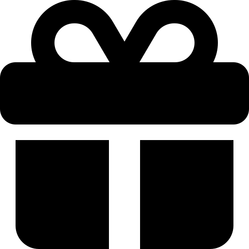

// ÇÖZÜM — ENERJİMETRE
Üretim hattındaki her makineye doğrudan takılan, kendi ekranıyla çalışan, makine
seviyesinde enerji görünürlüğü sağlayan kompakt bir endüstriyel ölçüm birimidir. Anlık güç
sıçramalarını, verim düşüşlerini ve gizli kayıpları gerçek zamanlı olarak gösterir, yetkilinin belirlediği eşik değerlerde uyarı verir.
Enerjimetre
- 3 boyutlu alarm sistemi
- Ön tanımlı + özel
- Anomali analizi
Alarm Sistemi
- Tarife saatlerine göre renkli dilimler
- 12 aylık geriye dönük kayıt
- Puantta gizli kayıp tespiti
Tüketim Grafiği
- Mesai / mesai dışı / mola ayrımı
- Alarm sayaçları + limit sapmaları
- 1 aylık otomatik kayıt
Günlük Rapor
- Evrensel uyumluluk
- Esnek parametreleme
RS485 Haberleşme
- Histerik görünürlük
- Alarm göstergeleri
Güç / Kadran
- Büyük rakam gösterimi
- Alarm göstergeleri
Güç / Büyük
- Gerçek zamanlı dalga formu
- Ani dalgalanma takibi
Güç / Sinyal
- Geleceğe yatırım
- Üretim bazlı karbon kimliği
CO₂ / Kadran
- Anlık CO₂ emisyonu
CO₂ / Büyük
- Yetkisiz erişim engeli
- Ayar koruması
Şifre Koruması
- Türkçe / İngilizce arayüz
TR / EN Dil Desteği
● Canlı Demo
Bilgisayardan bakıyorsan
karekodu telefonla tarat
karekodu telefonla tarat

VEYA
Telefondan bakıyorsan
butona dokun
Telegram'da Aç
butona dokun
Model Karşılaştırma
| V1 | V1S | |
|---|---|---|
| Anlık Güç Göstergesi | ✓ | ✓ |
| Osiloskop Görünümü | ✓ | ✓ |
| CO₂ Takibi | ✓ | ✓ |
| Tüketim Grafiği | ✓ | ✓ |
| Günlük Raporlama | — | ✓ |
| Alarm Sistemi | — | ✓ |
| Tarife Bazlı Analiz | — | ✓ |
| RS485 / Modbus | ✓ | ✓ |
V1
- Anlık Güç Göstergesi
- Osiloskop Görünümü
- CO₂ Takibi
- Tüketim Grafiği
- RS485 / Modbus
V1S
- Anlık Güç Göstergesi
- Osiloskop Görünümü
- CO₂ Takibi
- Tüketim Grafiği
- RS485 / Modbus
- Günlük Raporlama
- Alarm Sistemi
- Tarife Bazlı Analiz
ÜCRETSİZ DEMO
ENERJİMETRE V1S İLE 2 HAFTALIK DENEME
01
KURULUM & KAYIT
V1S hattınıza bağlanır, ilk hafta sessizce enerji tüketiminizi kayıt altına
alır.
02
AKTİF ÇALIŞMA
İkinci hafta tüm özellikler açılır — alarm, rapor, tarife analizi canlı olarak
çalışır.
03
ANALİZ & RAPOR
2 haftanın sonunda fabrikanızın standby enerji maliyetini raporluyoruz.

UNITER DASHBOARD
Uniter Dashboard aşamasına geçildiğinde ücretsiz güncelleme desteği dahildir.
✔ STANDBY MALİYET RAPORU HEDİYE
Mesai dışı ve mola saatlerindeki enerji kaçağınızı ilk kez rakamlarla görün.
Size işinize yaramayan bir şey satmak istemiyoruz.
TEŞEKKÜRLER
Muhammed Azad Kılıçarslan
+90 532 596 44 92
mak@arkheindustry.com | info@arkheips.com
Arkhe Endüstriyel Üretim Çözümleri A. Ş.